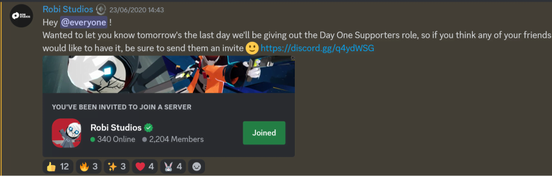
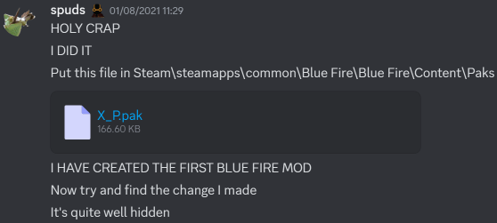
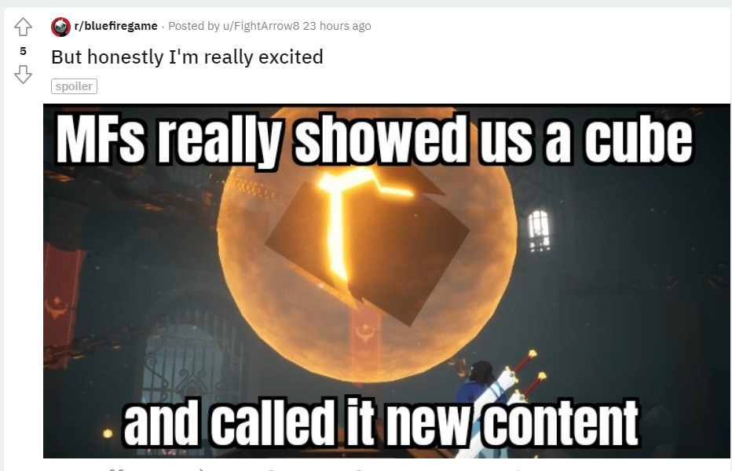

i first heard about blue fire from the announcement trailer which i saw in a nintendo indie world showcase. as soon as i watched it i was immediately captivated by its atmosphere, music, platforming, environments, enemies and characters.
its entire world just enamored me and i wanted to know more
so i searched the game up and somehow found a link to its discord community (i think on the studio website).
for context this was the first time i had ever done anything social on the internet (surprising since i'm a 2000s kid i know) - i had only ever really used it for emails, youtube and searching info.
so after making a discord account, into the server i dropped...

the devs and everyone else on the server were so lovely! it really was a great first experience of online community.
and of course i was greeted by the engineer of penumbra himself, orip (unfortunately no longer operational so i suppose this counts as lost media)
i would spend hours in the evenings just talking on the server - we even had our wonderful duck cult. in hindsight i realise the pandemic lockdown meant i had the time to keep track of everything happening there. the community being fairly small also helped with this and meant that the interactions felt so much more intimate. not that i didn't want more people excited about the game just that we were more tightly knit.
i could tell how much the devs were happy to have us along for the ride. we had plenty of interaction with them and they even hosted events such as our own q&a with gabriel, a screenshot competition and duck hide and seek!
even though that was only 4 years ago at the time of writing, i already feel nostalgic for when the server was always buzzing with activity. nowadays the server is comparatively quiet which is a shame since i loved talking with a lot of people there
(xel, photo, evolair, luukie13, squishie, nicky, youtube101, kito, nj you're awesome).
the demo was released to day one supporters (people who joined the discord early) a week early and i'm still so gutted i could've been part of that group had i heard about the game earlier.  of course the demo still released to the public and i got my hands on it
like every great demo it left me longing for the full game - the movement, overall gameplay and vibe were really great.
people were speedrunning it like crazy (bridge skip was very entertaining).
it released with fire keep and the uthas temple (starting area and second temple) which was a fair chunk of the game. i think at this point many of the areas from the announcement trailer had been scrapped.
it also used separate buttons for vertical and horizontal slashes (i'm glad that didn't stay).
in the leadup to the release of the game we were treated to a steady trickle of content to overanalyse.
graffiti games, the publisher, released an overview trailer which showed off a lot. this is the last trailer showing the full black enemies and detailed shadow lords.
relyea, a well known hollow knight youtuber, did a interview with gabriel which gave us a bunch of info to be excited about.
a release date announcement trailer was released and it looked awesome - new areas were revealed which looked really damn cool and the enemy designs had finally been colorised.
i was signed up to a newsletter from graffiti games which sent out some behind-the-scenes footage for blue fire.


 this included clips of a cut boss, SIRION (A MAJOR BOSS) AND QUEEN (THE FINAL BOSS).
apparently they hadn't been given permission to post that footage so it was quickly taken down!
i just wish i had the forethought to download the videos - yet more lost media :p
this included clips of a cut boss, SIRION (A MAJOR BOSS) AND QUEEN (THE FINAL BOSS).
apparently they hadn't been given permission to post that footage so it was quickly taken down!
i just wish i had the forethought to download the videos - yet more lost media :p
the making of blue fire was released which was a great introspection into the development and evolution of the game (plus it was lovely to see the community mentioned...although in the footage i had a typo and it has annoyed me since)
finally the countdown began...


the game finally released! with a hype launch trailer! and a makeship campaign (i think that's standard for graffiti games releases) - they even got failboat to promote it in a sponsored video! i do wish i got myself an umby but alas teenage lack of financial freedom...oh shit the blue fire t-shirts are still being sold on the graffiti games store i can still get one of those.
from what i know blue fire didn't sell as well as it deserved - obviously it is an indie game so wasn't going to sell as well as a game from an established studio but i think the pandemic was a major factor since it changed development cycles. this delayed the release which meant that initial hype had died down more and more people forgot about it. it also meant more difficult decisions in regards to choices in game direction.
i may be completely wrong about this though this was just the impression i got.
of course i got the game on day one and i got to play what i'd been obsessing over for months.
the characters are very charming and have really cool designs (nilo and orip my beloved) and the sidequests give them even more personality and expand on the lore! they always leave me wanting to see more of penumbra.
the floaty movement is really fun to use but spirits can make the game feel a bit too easy so i normally play without very many movement ones equipped for the most fun. the voids which test the movement can get really challenging but are always fair (although douklans leap was rough). the spin attack, wallrun and fire charm are definitely the best movement options since there's more intention behind their use than any dash or extra jump.
however the dash is very well implemented and being able to control its length felt really good. being able to target the dash was one of my favourite mechanics as it was so unique and fit naturally with the zelda-like targeting system. the combat works really well since it incorporates this with the rest of the movement and the bosses are real highlights.
now that some time has passed my hype has died down i think i can review the game a bit more critically. i still love the game very dearly but there are definitely flaws i was overlooking due to that hype.
the biggest flaw is the pacing of the game. by this i don't game length since not every game is able to produce a large amount of content but the allocation of types of gameplay. the start of the game is really good with this as it mixes combat, exploration and platforming together without one overshadowing the other.
however once once the three temples (steam house was a shortened fire temple) are completed, the game is just a backtracking exercise to fight the shadow lords and get to the queen. this is especially jarring considering there is little backtracking otherwise (the game is pretty linear). samael has you activating flames around the map and beira has you collecting pieces of her soul like in the spirit tear sections from twilight princess. when you point out that sirion has an entire area and dungeon it becomes quite obvious they weren't able to do the other shadow lords justice but still wanted to give them a substantial part of the game.
choosing to pad out the runtime was not the best solution and really impacts enjoyment at the end (although the movement spirits make this a bit more bearable). i honestly think if the shadow lord doors were immediately accessible after the tower of gods the game would have been a much better experience (even if shorter) which didn't feel like it was giving you busywork.
my other main criticism is the sidequests - they're all fetch quests for items you will find naturally: bremur's family photo, fara's mother's necklace, the musicians, etc. spirit hunter, mork and codi's quests are better since there's multiple items to find in more hidden places and you can check in on the characters multiple times throughout
blue fire was the game that got me into the incredible world of modding and programming and that is probably one of the most amazing thing this game and community has done for me. there was talk about support for user generated content but nothing happened until voidmaker.
so i decided to try and see if i could make any modifications without official support. the only thing that came up when i searched up unreal engine 4 modding was this video which i watched five times over the next week trying to understand everything going on until finally, something clicked 
of course like most modders starting off i just did a bunch of cosmetic mods which are still the majority of the blue fire mods i've put on nexus.
still i'm glad since i learnt basic 3D modelling for it and i'm actually quite proud of the zote model. but i wanted to make a randomiser...which finally happened a year later! you can read about the whole ordeal in the devlog on the blue fire rando page
the leadup to the void of sorrows DLC was very much just as exciting as the leadup to the base game since the devs had been hinting at more content for quite some time.
there was a few patches (i really admire how much effort robi studios put into polish) and some ducks were added as a very sweet homage to the server meme.
eventually robi studios put out a teaser on a blog post on their website. 
of course graffiti posted the actual trailer too early but it was posted later at the proper time
honestly, i think the void of sorrows dlc is perfect
the new voids and boss are fiendish and exhilarating; the lore really feels like an organic expansion to the world; the void gate is really fun to explore and the non-linearity of it was great; the easter eggs were extremely sweet (i think i cried when i read the robi coin); and the new cosmetics are great and made me laugh
unfortunately the way the dlc was activated meant a lot of people have no idea this expansion exists.
the dlc is hidden behind a door in the fire keep which only lights up if you watched the full credits which a lot of people didn't do since there isn't a skip button.
also the dlc was released for free which, while appreciated, meant since no conscious effort to get it was needed more people didn't realise it existed. ALSO WE WANT TO SUPPORT THE STUDIO LET US GIVE YOU MONEY!
funnily enough von became a villain which might have been a reference to a long debate i had with bazop about how trustworthy von was
voidmaker was an surprise announcement. a level creation tool for blue fire's movement? i'm absolutely in. also, instead of being a DLC this would be a standalone free spinoff... robi we love you but LET US PAY FOR YOUR BLOODY AWESOME GAMES!
i think partially because of it being an spinoff rather than a dlc it didn't get as much attention. there's some really cool levels on the platform and they released it as a free update for consoles anyway. ALSO THERE'S SOME BANGER LEVEL MUSIC TOO WHICH HAS NEVER BEEN RELEASED (mushroom king my beloved)